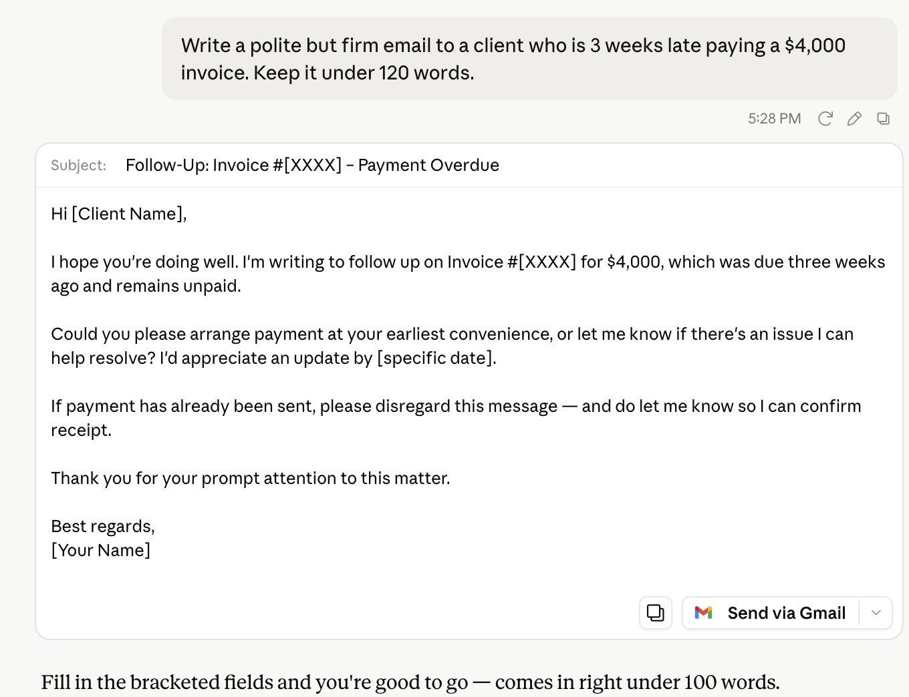
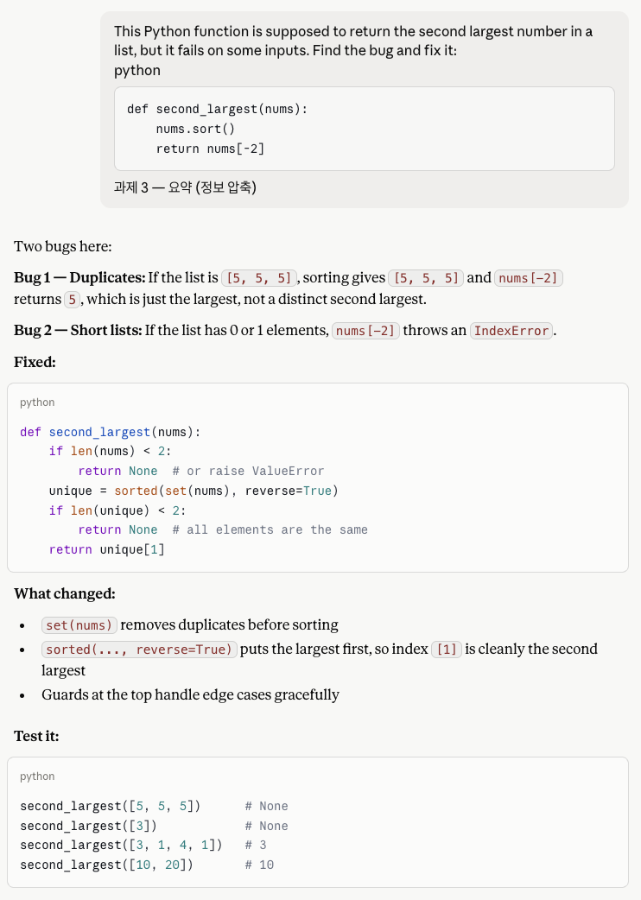
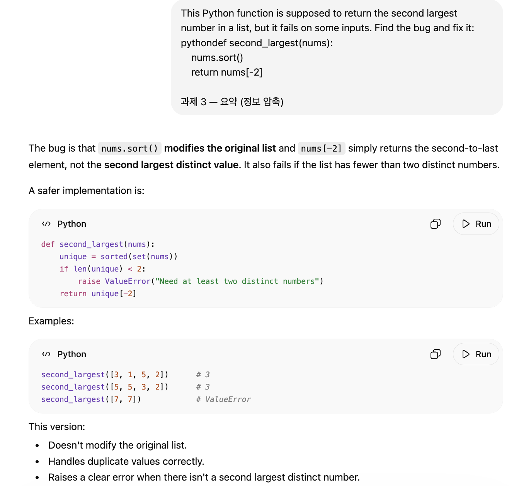
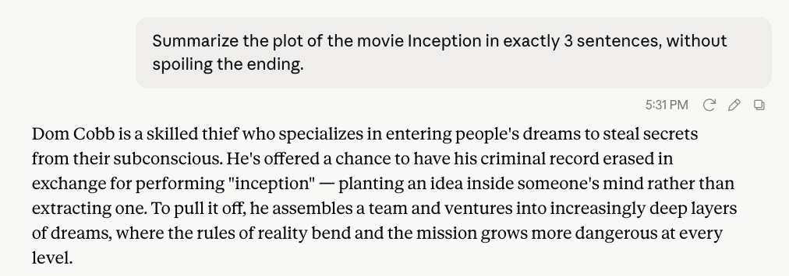
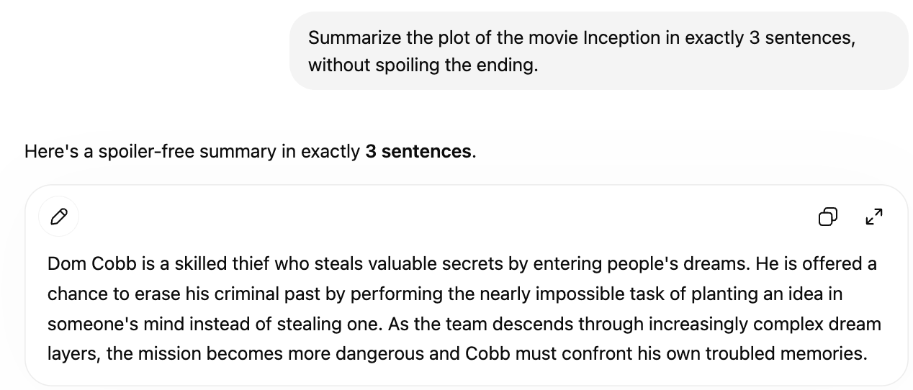
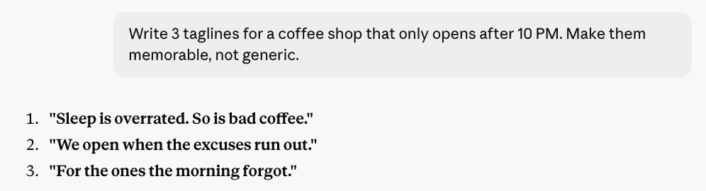
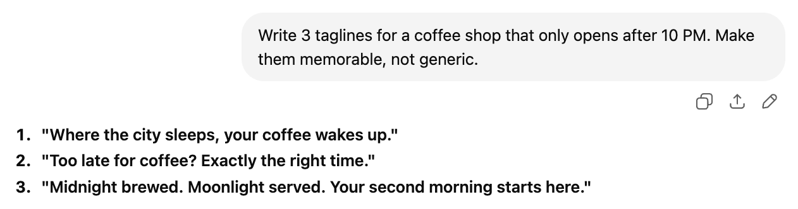
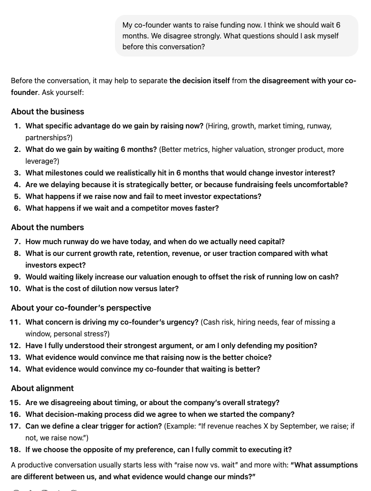
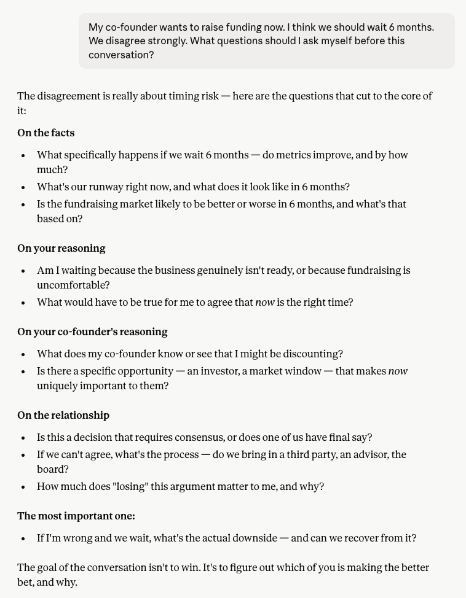

Not benchmarks. An overdue invoice, a Python bug, a constrained summary, ad copy, and a co-founder fight. Same prompts, same day, screenshots included.
Most "Claude vs ChatGPT" comparisons run on benchmarks you will never touch — SWE-bench scores, MMLU percentages, Elo ratings. Useful for researchers. Useless if you are trying to decide which one to open tomorrow morning.
So I gave both of them five tasks I actually do: chase an unpaid invoice, fix a bug, summarize something under a hard constraint, write marketing copy, and think through a disagreement with a business partner. Same prompts, same day, no cherry-picking. Here is what came back.
Spoiler on the format: I am not declaring an overall winner, because the results do not support one. What they do show is a consistent difference in how each model works — and that difference is more useful than a scoreboard.
Both produced something you could send without editing. ChatGPT went slightly more formal — "Dear [Client Name]," a longer body, an explicit offer to discuss any issues with the invoice. Claude was tighter and closed with a small but telling detail: it told me the draft came in just under 100 words, verifying its own constraint without being asked.


Result: a tie. Both are usable. If you want maximum politeness padding, ChatGPT. If you want to send it and move on, Claude. The self-verification on word count is a nice touch but not decisive.
This is the task where the gap was clearest.
Claude opened with "Two bugs here" and numbered them. Bug 1: duplicates — with [5, 5, 5], the function returns 5, which is the largest, not a distinct second largest. Bug 2: short lists — with 0 or 1 elements, nums[-2] throws an IndexError. Then a fixed version with guards, then four test cases covering each edge case it had just named.

ChatGPT caught the same core issue and added something Claude did not mention: nums.sort() mutates the caller's original list, which is a real side effect. Its fix raises a ValueError instead of returning None, and it gave three test cases.

Result: Claude, narrowly. Both fixes are correct and both caught things the other did not. But Claude structured the diagnosis — named the bugs, numbered them, then proved each one with a matching test. When you are debugging something you did not write, that structure is worth more than the extra observation about mutation. ChatGPT's point about list mutation was genuinely good and Claude missed it.
Two constraints stacked: an exact sentence count and a content restriction. Both hit three sentences. The difference was in the second constraint.
Claude stayed strictly on the mechanics of the plot — the heist, the concept of inception, the descent through dream layers. Nothing about Cobb's personal history.

ChatGPT wrote a clean summary too, but its third sentence ended with "Cobb must confront his own troubled memories." That is not a plot twist, but it is the emotional core of the film, and it edges closer to what a spoiler-averse reader was trying to avoid.

Result: Claude, on a technicality. Both are good summaries. Claude interpreted "without spoiling" more conservatively, which is the safer read of an ambiguous instruction.
This is where the two models diverge most, and where I am least willing to pick a side.
Claude went dry and slightly cynical: "Sleep is overrated. So is bad coffee." / "We open when the excuses run out." / "For the ones the morning forgot."

ChatGPT went atmospheric and image-driven: "Where the city sleeps, your coffee wakes up." / "Too late for coffee? Exactly the right time." / "Midnight brewed. Moonlight served. Your second morning starts here."

Result: a genuine tie, and taste decides it. If the shop is a dim place for people avoiding their apartments, Claude's lines fit. If it is warm and a little romantic, ChatGPT's do. Anyone who tells you one of these is objectively better is selling something. The practical takeaway is that the two models have different default voices — worth knowing before you ask either one for brand copy.
This one had no correct answer, which made the difference in approach obvious.
ChatGPT produced eighteen questions across four categories: the business, the numbers, the co-founder's perspective, and alignment. It is thorough in the way a good consultant is thorough — dilution cost, runway, what evidence would change each side's mind, what decision process you agreed to at founding. If you want to walk in having considered everything, this is the better artifact.

Claude produced nine, then did two things ChatGPT did not. It flagged one question as "the most important one" — if I am wrong and we wait, what is the actual downside, and can we recover from it? And it closed by reframing the whole situation: "The goal of the conversation isn't to win. It's to figure out which of you is making the better bet, and why."

Result: a tie, but a revealing one. ChatGPT gave me more to work with. Claude gave me a way to think about it. If I were preparing seriously, I would want ChatGPT's list. If I were walking into the room in ten minutes, I would want Claude's framing.
Across five tasks the scoreline is two narrow wins for Claude and three ties — which is another way of saying these models are close enough that a scoreline is not the useful output. The useful output is the pattern in how they answer.
Claude compresses and prioritizes. Nine questions instead of eighteen, with one marked as most important. Bugs named and numbered before the fix. A summary that stops exactly where the instruction implied it should. Its instinct is to decide what matters and lead with that.
ChatGPT covers the ground. Eighteen questions organized into categories. An extra observation about list mutation Claude missed entirely. A more padded, more formal email. Its instinct is to make sure nothing is left out.
Neither instinct is better in the abstract. They are better at different moments. Compression is what you want when you already understand the problem and need to act. Coverage is what you want when you are worried about the thing you have not thought of yet.
Based on these five tasks and the pattern behind them:
Reach for Claude when you need something tight — debugging where edge cases matter, writing under a hard constraint, or getting a fast read on a decision you have already been chewing on. Its answers assume you want the point, not the tour.
Reach for ChatGPT when completeness is the goal — preparing for a high-stakes conversation, building a checklist you cannot afford to have gaps in, or drafting something that needs to read as formal and thorough.
And for creative work, try both. The tagline task showed they have genuinely different voices, and which one fits depends entirely on what you are making. Running the same prompt through both takes an extra thirty seconds and often produces a better result than either alone.
Across five real tasks, Claude won two narrowly and three were ties. That is close enough that the scoreline is not the story. The story is that Claude compresses and prioritizes while ChatGPT covers and organizes — and knowing which one you need in a given moment is more useful than knowing which one scored higher on a benchmark you will never run.